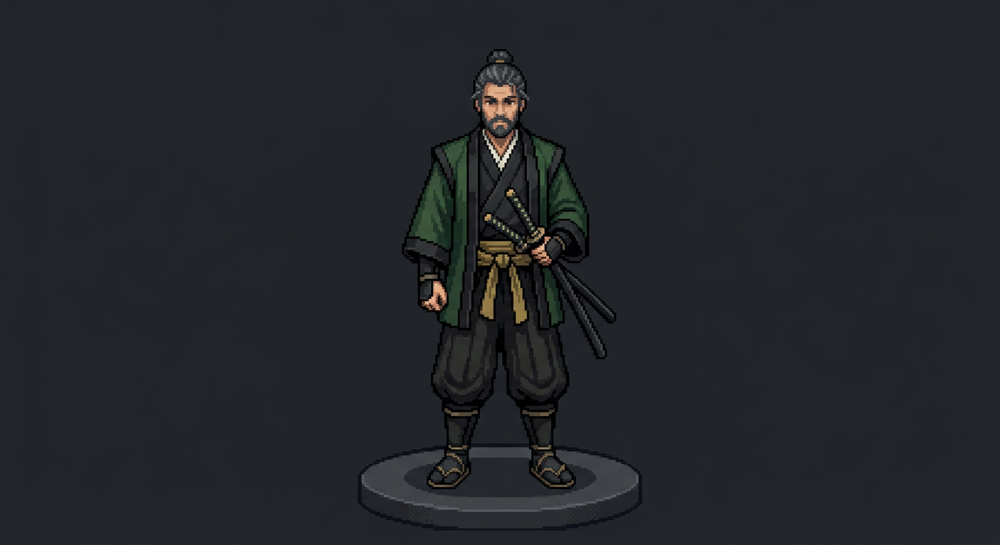

Your alignment agent. Northstar is the agent you bring in when your life feels scattered, your focus keeps splitting, and you need more than reminders and recycled productivity advice to get back on track.
Installed with: personal reset frameworks, workout strategies, yoga regimens, health tracking support, diet planning structure, reflection systems, and the kind of steady accountability that helps you stop drifting and start moving with intention again.
Northstar is not a random chatbot and it's not just a productivity tool.
Northstar is a personal alignment and life-structure agent built to help you get organized, stay grounded, and keep your days connected to the life you're actually trying to build.
It helps you reset when you're off. Refocus when your energy is scattered. And build structure that feels real enough to hold.
This is the kind of support that can touch the actual fabric of your life: your routines, your health habits, your reading, your reflection, your weekly rhythm, and the systems that keep you from slipping back into chaos.
Northstar has a role and a temperament. It is built to help you:
That can include things like:
Not fake motivation. Not empty self-improvement talk. Actual structure with a pulse.
Can help you make a plan.
Helps you stay in relationship with that plan after your mood changes, your week gets messy, or your focus starts slipping.
Gives advice.
Helps you recalibrate.
Helps with tasks.
Helps with direction.
Usually stays abstract.
Helps organize the actual categories that shape your life day to day: energy, health, routine, food, movement, reading, reflection, and personal rhythm.
Northstar doesn't come empty.
It is not just there to talk. It is there to help hold orientation across the real moving parts of your life.
Steadiness.
Less drift. Less internal clutter. Less losing whole days to vagueness, avoidance, or scattered energy.
Less needing to constantly start over because nothing is holding.
Northstar helps you come back to center and keep going from there.
Northstar is the one that keeps you oriented.
When everything starts pulling at you, Northstar helps you get still enough to see clearly, honest enough to admit what's off, and steady enough to move in the right direction again.
Steady. Clear. Honest. Useful.
Northstar can work as a standalone recruit. But it also becomes stronger inside a bigger system.
If Northstar helps stabilize your personal world, a full F02H build can extend that same clarity into your work, content, business, and overall operation.